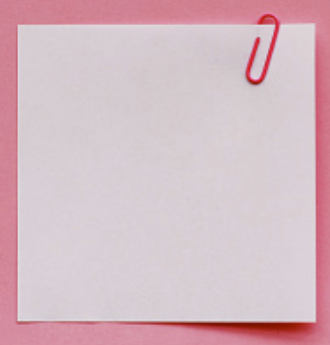

<!DOCTYPE html>
<html lang="en">
  <head>
    <meta charset="UTF-8" />
    <title>Kanumol | Anniversary</title>
    <link href="index_ss.css" rel="stylesheet" />
  </head>
</html>

<body>
  <header class="main-header">
    <h1>
      <ion-icon name="heart-circle-outline"></ion-icon>Kanumol<ion-icon
        name="heart-circle-outline"
      ></ion-icon>
    </h1>
    <nav class="main_nav">
      <a class="working_anchor" href="index.html">Home</a>
      <a href="friendship.html">Friendship</a>
      <a href="dating.html">Dating</a>
      <a href="her.html">Her</a>
    </nav>
  </header>

  <script
    type="module"
    src="https://unpkg.com/ionicons@5.5.2/dist/ionicons/ionicons.esm.js"
  ></script>
  <script
    nomodule
    src="https://unpkg.com/ionicons@5.5.2/dist/ionicons/ionicons.js"
  ></script>

  <article>
    <h2>Many many congratulations for completing a year together 💋</h2>
    <p>
      <strong>Happy Anniversary</strong> my darling, my babe, mere Kaju, my
      Superkanushi. I am extrememly happy that we have completed a
      <strong>year together</strong>, though with many ups and down, but still,
      it's worth it 🥺😘
    </p>

    <p class="reply_all">
      
      <span class="reply_all_span"
        >Please reply to everything. If you are recording, please record the
        reaction and talk or msg side by side
      </span>
    </p>

    <strong class="hover"> (Hover on the notepad in the header) </strong>

    <p>
      We shared a lot of memories together. Kissing 😘, hugs 🤗, orals 🍆,
      dates, VCs, and a lot more. I know you remember all of them 🧿
    </p>

    <p>
      This is my first ever, I mean first ever try on doing something like this.
      I hope it goes just like I expect it to be. It's going to be kind-of like
      a flashback of our good memories. I wish that you like it, my love 🥺
    </p>

    <p>
      I will try to add in the happy moments between us which I vividly
      remember.
    </p>

    <p>
      I have always been amazed and blown away by your presence (though now you
      want to blow me too with your mouth). You are amazing and I'm honest, I'm
      obsessed with you. You make me feel much safer. Even when I was with
      Jaskamal that day, I was still focused on you and not my friend when we
      had fun 🥟🤗
    </p>

    <p>
      Your body is amazing. I'm down to explore every bit of your body. You are
      a masterpiece. You are the reason behind my 100s of boners. And your
      talent at kissing me and sucking my dick, is amazing. OH God, I got a
      boner abhi fir se. Ab? 🙈🤤
    </p>

    <p>
      The spark between us has died out before. We don't send big paragraphs to
      each other when we are angry or sad. There have been times when we have
      slept sad. My promise, I will try to not let that happen again. Tusi v try
      krna, gande 😒😍
    </p>

    <p>
      I am very excited today. If I send you this (after it turns out great) you
      might be reading this at 5:something PM or after 5PM. This is indeed
      because it was exactly 5PM, when we started our journey together. Yaaar, I
      hope this thing turns out good. Even if it didn't, I know you will help me
      to make this better.
    </p>
    <p>My kaju, I love you. Do you love me back too 🥺</p>
  </article>

  <aside>
    <h3>Related</h3>
    <nav class="related_nav">
      <a class="working_anchor" href="index.html">Home</a>
      <a href="friendship.html">Friendship</a>
      <a href="dating.html">Dating</a>
      <a href="her.html">Her</a>
      <a href="past_writings.html">Old writings</a>
      <a href="#">New writings</a>
      <a href="#">Songs dedicated to her</a>
      <a href="#">Movies to watch together</a>
    </nav>
    <button></button>
  </aside>
</body>
